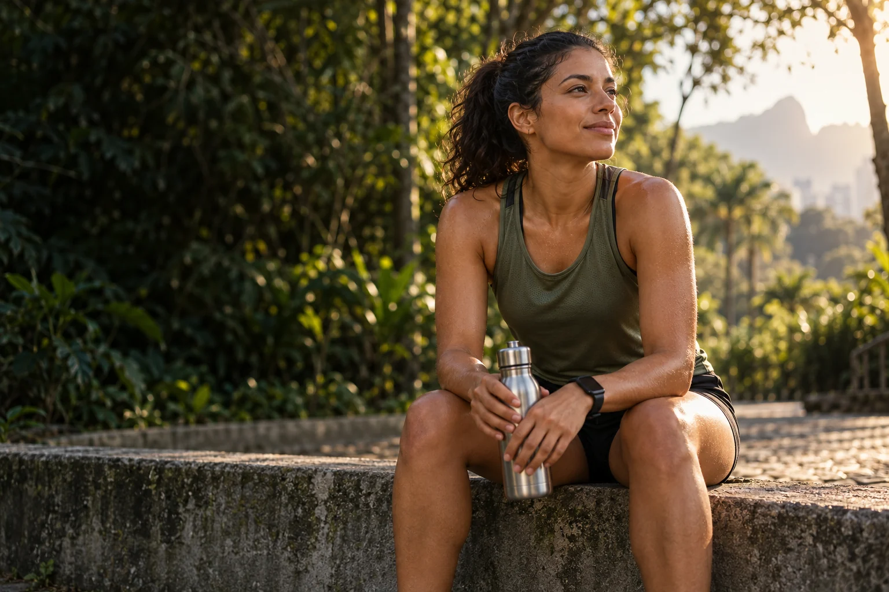
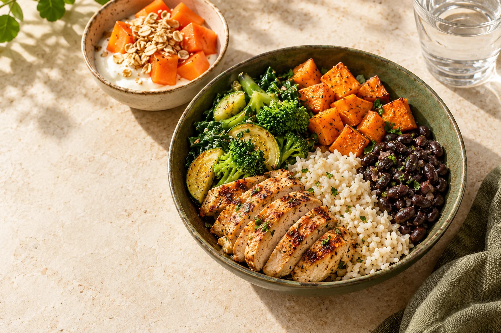

Escutar sua rotina
Objetivos, hábitos alimentares, horários de trabalho e treinos entram na conversa.

Nutrição esportiva · Treino e vida real
Corrida, musculação ou o começo de uma nova rotina. Uma proposta de cuidado que considera seus objetivos, seus horários e a comida de que você gosta.
Para quem treina.
Para quem está começando.
Para a vida real.
Seu objetivo muda. O cuidado acompanha.
01 · O seu momento
O melhor ponto de partida é entender onde você está. Escolha o que mais se parece com o seu momento.
Conteúdo demonstrativo. A indicação e a condução do atendimento dependem da avaliação de um nutricionista habilitado.
Na consulta, alimentação, horários e rotina de treino são avaliados em conjunto. O plano é individual, com espaço para as suas preferências.

Comida de verdade. Contexto individual.02 · Alimentação possível
Seus horários, preferências, orçamento e rotina de treinos fazem parte da conversa. A proposta é construir escolhas que façam sentido fora do consultório.
Não existe um cardápio único nesta amostra. Necessidades nutricionais e eventuais suplementos exigem avaliação profissional individual.
03 · A abordagem
Uma proposta de acompanhamento em quatro momentos. Clareza sobre o processo, do primeiro encontro aos ajustes.
Objetivos, hábitos alimentares, horários de trabalho e treinos entram na conversa.
O profissional avalia o histórico e os dados pertinentes para definir a conduta.
Escolhas e estratégias são combinadas de acordo com suas necessidades e possibilidades.
A evolução da rotina orienta os próximos encontros e os ajustes do acompanhamento.
Fluxo ilustrativo. A duração, as modalidades, os procedimentos e o suporte deverão ser definidos pelo profissional responsável. Sem promessa de resultados.
04 · Seu ponto de partida
Organize três informações sobre sua rotina. Você recebe um resumo simples para levar à primeira conversa com o profissional.
Esta ferramenta não avalia sua saúde, não calcula nutrientes e não recomenda dietas. As escolhas ficam apenas nesta página e não são enviadas.
05 · Antes de começar
Esta proposta visual contempla pessoas com diferentes rotinas de treino, inclusive quem está começando. A adequação do atendimento deve ser conversada com o profissional responsável.
Não. Esta é uma demonstração de site. O resumo organiza o assunto de uma conversa e não substitui consulta, avaliação ou prescrição nutricional.
A proposta é começar pela sua rotina, objetivos e histórico. Formato, duração, avaliações e documentos necessários serão confirmados pelo profissional antes do agendamento.
Não há indicação de suplementos nesta página. Necessidade, segurança e forma de uso devem ser avaliadas individualmente por um profissional habilitado.
Ainda não. O modelo está em demonstração. Nome do profissional, CRN, modalidades, valores e canais de atendimento precisam ser confirmados antes da ativação.
Nutrição esportiva, com individualidade
Conheça esta proposta de site e imagine como ela pode apresentar o seu atendimento.